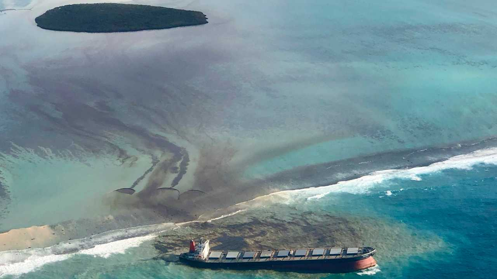

Stuttgard
The Stuttgart was a German hospital ship which sank during the first bombing of the naval port in Gdynia by the Western Allies, which took place in 1943 about 2 nautical miles from the port of Gdynia.
In 1953 the Commission found that the hull 80% destroyed because of the wear and tear of the machines due to their age and 10 years later it was determined to be 100%. Taking into account the cost of extraction and reconstruction, outdated type, low speed and lack of operational need, the Committee ruled that the wreck was not worth extracting and rebuilding. In view of the above, it was considered that the Stuttgart wreck should be regarded as a navigational obstacle and removed by pyrotechnic method. The pyrotechnic method was a method used for very damaged wrecks and for removing navigational obstacles. It consists of breaking the wreckage into parts with explosives and extracting them with cranes. The operation started in 1956. Unfortunately, they didn’t analyze this method when it came in terms of the environmental impact. The result of removing parts of the ship was contamination of the seabed with fuel and wreckage from the Stuttgart. The shipwreck was found again in 1992. Stuttgart is at a depth of 21-23m.

The Gulf of Gdańsk area, where the shipwreck Stuttgart is located, is an area particularly vulnerable to marine pollution, including the waters of the Vistula River and as a result of atmospheric deposition. The wreck lies close to the port of Gdynia, which is one of the largest seaports in Poland. Therefore, it cannot be unequivocally concluded that the source of water and sediment pollution in this area is solely the unit under examination.
Although it cannot be indisputable that only the shipwreck Stuttgart is a source of contamination of bottom sediments in the area of its deposition, it can be concluded from the results obtained that it has a significant contribution to the contamination of bottom sediments, particularly those of the Polycyclic Aromatic Hydrocarbons group and certain metals. It seems obvious that in most cases there is a likelihood of leakage of petroleum substances. The problem of wrecks at the bottom of the waters is particularly important in the case of small tanks with a mid-continental position such as the Baltic Sea, where intensive hostilities happened.
In 1999 it was set that the contaminated area with heavy fuel flowing out of the Stuttgart wreck is about 25 000 sq.m. The estimated volume of contaminated ground is about 40 000 c.m. (c.a. 70 000 tons). In 2015 the contaminated area grew to 350 000 sq.m. and the estimated volume of contaminated ground was up to 320 000 c.m. (c.a. 400 000 tons). In the area of the Stuttgart Wreck sediments do not comply with the cleanliness standards for dredged material determined in the Regulation of the Minister of Environment, dated 9th September 2002 (Journal of Laws No.165, item 1359) - samples indicate great contamination of the seabed with heavy fuel – some indicators were exceeded by 1000 or more times. In the area of the Stuttgart wreck samples of water comply with the cleanliness standards. The environment’s state in the region of the Stuttgart wreck identified in November 2009 is equal to the status of a local ecological catastrophe. The layer of mazout occurring at the point of contact of bottom sediment and the depths of the water created an azoic zone – devoid of macroscopic life.
In November 2009 the state of the environment identified on the basis of macrozoobenthos surveys in the area of the Stuttgart wreck poses a direct threat not only for biocenoses of the marine seabed, but directly and indirectly for the whole trophic chain of the ecosystem. At 2015 we get proof – it is not end - polluted area is not less than 15 times bigger than initially.
In places of sample collection for surveys there was an uncovering of contaminated substratum and a complete atrophy of living forms. It is necessary to start immediate work aimed at developing a method of cleaning and re-cultivating the seabed in the area s/s Stuttgart wreck.